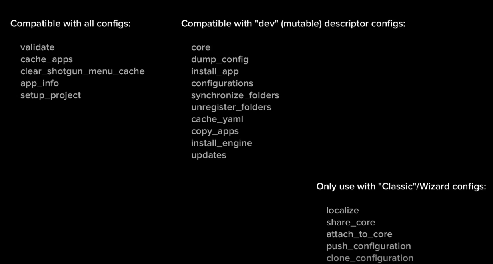
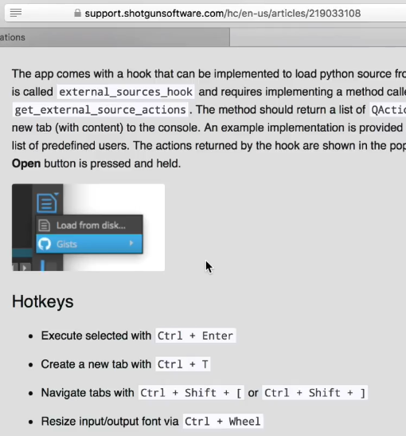

앱, 엔진 및 프레임워크 자동 업데이트
다음으로 구성을 변경하겠습니다.
이 작업은 툴킷 API 명령을 사용하여 탱크 명령줄 도구를 사용하거나 구성을 수동으로 편집하여 수행할 수 있습니다.
먼저 탱크 CLI 명령을 시연하겠습니다.
기존 앱 엔진과 프레임워크가 최신인지 확인한 다음 가능한 모든 업데이트를 수행하는 앱일 수 있습니다.
프로젝트의 구성 위치를 찾기 위해 이 방법을 사용합니다.
Python 콘솔을 열고 tk 입력하고 Enter 키를 누릅니다.
나중에 TK core API에 대해 많은 이야기를 나눌까 봐 걱정 마세요.
경로 이동 해서 tank 실행합니다.
기존 명령 중 일부가 현재 사용 중인 기본 구성과 호환되지 않는 명령 목록이 표시됩니다.

다음은 명령어 및 명령어 구성 유형을 요약한 것입니다.
맨 아래에 있는 클래식에서 추가 명령은 제가 가르치는 클라우드 구성 워크플로우입니다.
앞으로 이것을 다듬어 실제로 실행할 수 있는 명령만 보게 되기를 바랍니다.
Hopefully will polish this up in the future so you'll only see commands that you can actually run. 구성에서 모든 앱 엔진과 프레임워크를 업데이트하려면 tank update 명령을 실행하면 됩니다.
모든 앱, 엔지 그리고 프레임워크를 업데이트 하기 위해서 탱크 업데이트 커맨드만 실행 하면 됩니다.
이 명령은 tk-config-learn의 모든 내용을 변경한 것처럼 보입니다.
우리는 git 명령을 사용하여 무엇이 바뀌었는지 확인할 수 있다.
이를 위해 모든 버전 제어 기술을 사용할 수 있습니다.
So it looks like the apps tamil engine CMO and frameworks tamil files were updated.
We can take a closer look to see the actual edit phew not so scary anymore.
이제 우리는 어떤 변화가 옳은지 알게 되었다.
문제가 없는지 확인하기 위해 구성을 숏건 데스크톱에 다시 로드하겠습니다.
실제 스튜디오에서 작업하는 경우 중요한 아티스트 워크플로우를 테스트하여 이러한 변경 사항이 부정적인 영향을 미치지 않도록 하고 싶을 겁니다.
물론 우소프트웨어에 대한 철저한 QA를 제공하지만, 예상치 못한 일부 사내 툴 또는 커스터마이징과 충돌이 있을 수 있습니다.
구성을 업데이트하기 위해 sgtk api를 사용하는 것이 좋습니다.
먼저 일부 git 명령을 사용하여 변경 사항을 dev config로 되돌리겠습니다.
모든 것이 내가 탱크 업데이트를 하기 전의 상태로 되돌아왔다.
Now I'll pop open the shotgun Python console get the list of available commands in my project environment and print them out with their descriptions. 이제 샷건 Python 콘솔을 열어 프로젝트 환경에서 사용 가능한 명령 목록을 가져와 설명과 함께 인쇄하겠습니다.
commands = tk.list_commands()
for command in commands:
print "{}: {}".format(command, tk.get_command(command).description)
Don't worry if you don't follow this it's boilerplate so you can just copy the code. 걱정마세요. 만약 당신이 이것을 따르지 않는다면 그것은 보일러판이기 때문에 당신은 코드를 복사만 할 수 있다.
다른 동영상에서 SGDK API에 대해 다룰 것이다.
출력된 명령어들은 꽤 친숙해 보일 것입니다.
업데이트 명령어에 관심이 있는데 여기 있습니다.
updates = tk.get_command("updates")
print dir(updates)
# ['_SgtkSystemCommand__internal_action_obj', '_SgtkSystemCommand__log', '__class__',
# '__delattr__', '__dict__', '__doc__', '__format__', '__getattribute__', '__hash__', '__init__',
# '__module__', '__new__', '__reduce__', '__reduce_ex__', '__repr__', '__setattr__', '__sizeof__', # '__str__', '__subclasshook__', '__weakref__', 'category', 'description', 'execute', 'logger',
# 'name', 'parameters', 'set_logger']
updates.parameters
# Results:
# {'app_filter': {'default': 'ALL', 'type': 'str', 'description': 'Name of app to check.'},
# 'preserve_yaml': {'default': True, 'type': 'bool', 'description': 'Enable alternative yaml
# parser that better preserves yaml structure and comments'}, 'engine_filter': {'default':
# 'ALL''type': 'str', 'description': 'Name of engine to check.'}, 'environment_filter':
# {'default': 'ALL', 'type': 'str', 'description': 'Name of environment to check.'}, 'external':
# {'default': None, 'type': 'str', 'description': 'Specify an external config to update.'}}
저기 뭐가 있는지 한번 보죠.
It looks like it'll update everything if I don't specify any environments and just past an empty dictionary to the execute method. 어떤 환경도 지정하지 않고 빈 사전만 실행을 하면 모든 것이 업데이트될 것 같습니다.
Let's run it.
나는 우리의 탱크 커맨드라인 툴이 했던 것과 똑같은 변화를 만들었습니다.
여기 Python 코드의 멋진 점은 구성을 업데이트해야 할 때마다 파일에 저장하고 다시 로드할 수 있다는 것입니다.
updates = tk.get_command("updates")
updates.execute({})
Just click play.
Or you can check out.
The TK multi Python console Docs to learn about how to integrate something like github gist's or you can make a little single button shotgun desktop out of it or you could make a Maya shelf script out of it. TK 다중 Python 콘솔 문서는 Gitub Gist와 같은 것을 통합하는 방법에 대해 알려줍니다. 샷건 데스크탑에 버튼을 만드는 방법이 있습니다. Maya 쉘프 스크립트에 등록 할수도 있습니다.

import sgtk
engine = sgtk.platform.current_engine()
contex = engine.context
tk = sgtk.sgtk_from_entity("Project", context.project)
updates = tk.get_command("updates")
updates.execute({})
That last example is little wacky. 그 마지막 예는 조금 우스꽝스럽다.
I'm just trying to drill home the idea that commands you puzzle out with the shotgun toolkit API are much more scriptable than tank commands which many times require script halting standard in user input. 나는 단지 당신이 샷건 툴킷 API로 혼동하는 명령들이 사용자 입력에서 스크립트 중지 표준을 요구하는 탱크 명령보다 훨씬 더 대본이 가능하다는 생각을 납득시키려고 노력하고 있다.
Just remember that you can run sgtk commands in python from anywhere sgtk is available. sgtk는 사용 가능한 모든 위치에서 python으로 sgtk 명령을 실행할 수 있습니다.
Which includes maya nuke 3ds max photoshop etc. Maya, nuke, 3ds max 그리고 포토샵 등이 포함되어 있습니다.
Once I'm satisfied that the changes are desirable I'll push them up to github create a pull request double check them one more time or good luck and then assign the pull request to someone else on my team to check my work.
Once that person that proves the pull request I can merge two master create another tag to release download it and post it to my pipeline configuration entity.
Now when I switch back to the primary config the updated engines and frameworks are loaded. 이제 기본 구성으로 다시 전환하면 업데이트된 엔진과 프레임워크가 로드됩니다.
Getting a feel for the workflow. 워크플로우에 대한 감각을 익힙니다.
We make and test changes locally on a dev config run them through a VCS commit and approval process and then post the result as a new and improved quote AppStore payload to the primary config on our site. 개발 구성에서 로컬로 변경 사항을 수행하고 테스트한 후 VCS 커밋 및 승인 프로세스를 통해 변경 사항을 실행한 다음, 개선된 내용이 AppStore 페이로드로 결과를 당사 사이트의 기본 구성에 게시합니다.
Going through an approval process might seem a bit dumb in the context of this example since we used s gtk commands to make the change. 이 예제에서는 sgtk 명령을 사용하여 변경했기 때문에 승인 프로세스를 거치는 것이 다소 어리석은 것처럼 보일 수 있습니다.
In theory it shouldn't have made a mistake because as a mob second law right. 이론상으로는 그것은 실수를 하지 말았어야 했다. 왜냐하면 폭도 제2법칙의 권리이기 때문이다.
But if you really want to unlock the raw power of toolkit.
Yes I know I've said that before
You'll have to start editing config gamal and Python files by hand.
Which means we have to take into account that pesky human error factor.
In which case it'll be very glad you have the support of your VCS to track down and refer frac ups you will most definitely birth during your tenure as a bag of flesh and blood no offense.
I also want to acknowledge that there might not always be another person available or willing to check your work.
In that case you can still use github spore request function to perform one final diff before merging a development branch to master.
It's weird how many mistakes folks catch in the pull requests environment.
May be something to do with looking at the code in a different context.